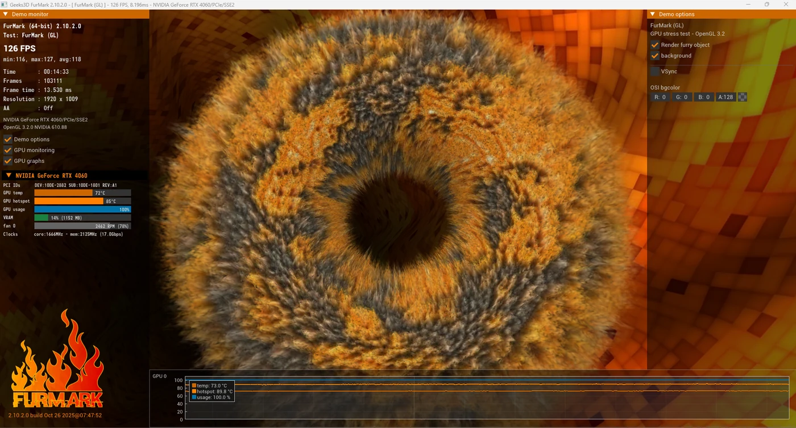

Mantención Nivel 2 · KROWN // CORE
Proyecto #001
Mantención completa de un equipo con acumulación de polvo: se cambió la pasta térmica del CPU y de la GPU y se limpió todo el interior.
Potencia tu reino.
Armamos, mantenemos y personalizamos computadores con procesos claros y resultados verificables. Del proyecto que tienes en mente al equipo funcionando en tu escritorio.
Videos propios sobre armado, mantenimiento y novedades tech. Míralos donde prefieras y síguenos para no perderte los próximos.
Desde el primer armado hasta la mantención periódica y la personalización estética — todo coordinado directo por WhatsApp.
¿Qué necesitas hoy?
Desliza la tabla hacia el lado para ver ambos niveles
| Incluye | KROWN // CLEAN | KROWN // CORE |
|---|---|---|
| Limpieza superficial | Sí | Sí |
| Desarme completo y limpieza profunda | — | Sí |
| Pasta térmica CPU | Sí | Sí |
| Pasta térmica GPU | — | Sí |
| Cable management | Sí | Sí |
| Test de temperaturas | Sí | Sí |
| Test de estabilidad | — | Sí |
| Optimización de Windows (si corresponde) | — | Sí |
Junta servicios en la misma visita y paga menos por el conjunto que por separado.
Arrastra el control para comparar el estado original de cada equipo con el resultado final. Estos son solo algunos trabajos — el portafolio completo sigue creciendo.
Mantención completa de un equipo con acumulación de polvo: se cambió la pasta térmica del CPU y de la GPU y se limpió todo el interior.
Mantención preventiva de un equipo que marcaba 41 °C en reposo. Se cambió la pasta térmica del CPU y se hizo una limpieza superficial: después del trabajo la temperatura en reposo bajó a 34 °C.
Mantención preventiva: se cambió la pasta térmica del CPU y se hizo una limpieza superficial del equipo.
Cuando hay un equipo disponible lo vas a ver acá, con precio y estado real. Los proyectos ya entregados quedan como parte del portafolio — nunca se muestran como disponibles.

No entregamos nada a ciegas. Antes de cerrar un trabajo corremos pruebas de estabilidad, temperatura y rendimiento — y cuando corresponde, te compartimos las capturas reales.
Según el trabajo, esto puede incluir pruebas de CPU, GPU, RAM y almacenamiento, además de monitoreo de temperaturas y benchmarks de rendimiento. No todas las herramientas se usan en todos los equipos.

Desde los seis años los computadores me fascinan. Empecé desarmando notebooks por pura curiosidad y, con el tiempo, entendí que un computador es mucho más que una máquina: es tu espacio personal, donde te expresas y te muestras al mundo como eres.
Así nació KROWN: un lugar donde damos vida a tus ideas y potenciamos tu reino.
Bastián Oyarce · Fundador de KROWN
Cuéntanos qué necesita tu equipo — armado, mantención, diagnóstico o personalización — y te respondemos por WhatsApp con los siguientes pasos.